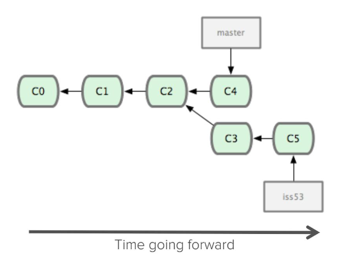
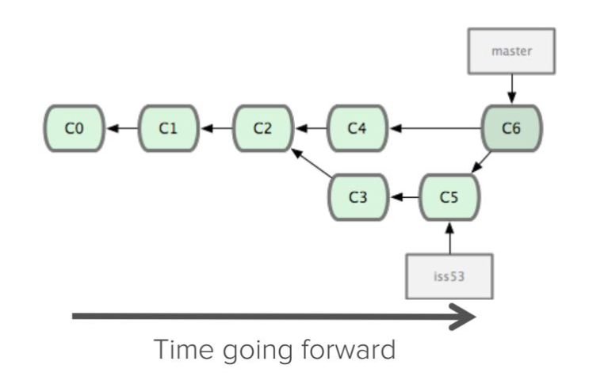
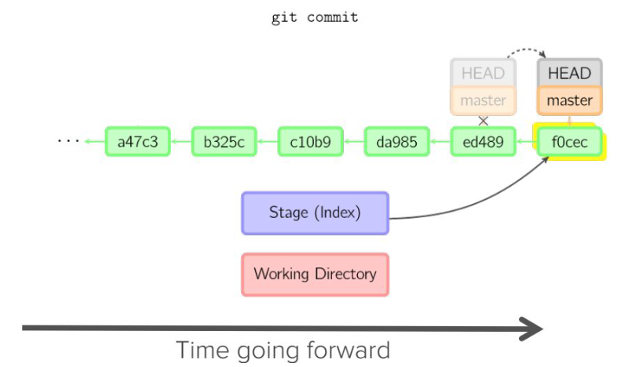
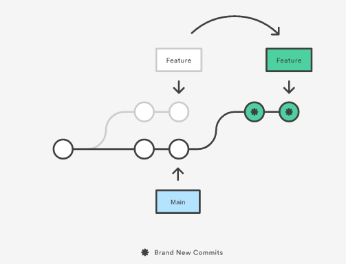

根據使用情境將常用的 git 指令加以整理.
Git 簡介
Git 是一套分散式版次管理工具, 可在各種電腦操作系統中使用, 其目的是用來管理資料改版過程中的所有細節, 最常被用來管理程式套件的開發流程. 能夠配合 Git 使用常見的 Web based 服務有 Github, Gitlab 與 Bitbucket.
由於利用電腦輔助各種產品設計開發的過程, 不僅牽涉許多文字與數位資料, 而且通常在不同時段, 會與許多不同專業的人士進行協同設計. 過程中若沒有完善的分散版次管理系統, 比較可能產生資料紛亂, 難以追蹤問題, 且團隊成員間針對協同資料間的權利與義務不容易有效釐清.
以下列出使用 Git 分散式版次管理的優點:
- 各開發者可以同步對同一文件或程式進行改版, 改版時無需上網
- 所有提交的改版內容均會存檔, 一旦納入管理的資料不會丟失, 也不會查不出資料被誰改寫
- 系統中明確儲存各階段各檔案的改版歷程
上列所謂同步開發的意思是, 只要各團隊成員了解專案的目標, 以及每次改版的動機, 就可以各自在同一時間, 直接對倉儲進行改版, 等到各成員分別將改版內容提交推送至遠端倉儲時, 若各改版內容產生衝突, 就可以依照實際需求進行處理後合併.
Git 基本概念
以下 Git 專有名詞說明翻譯自這裡:
Snapshots (快照)
- 快照是 git 追踪資料歷程的方式
- 快照主要是記錄所有文件在特定時間點的狀態
- 使用者可以決定何時拍快照以及拍那些文件資料
- 使用者能夠擷取先前所拍的任何快照
Commits (提交)
- 對資料拍快照的動作稱為提交
- 提交可以是動詞, 也可以是名詞, 例如: 提交這個程式, 或者已經完成幾次提交
- 基本上改版專案就是由每次的提交所組成
- 每一個提交都包含三種資料: 檔案的更動內容、與上一個提交的參照資料 (即所謂 parent commit)、一組 hash code (SHA-1 hashes).
其中 hash code 長得像這樣: f2d2ec5069fc6776c80b3ad6b7cbde3cade4e
Repositories (儲存庫或倉儲)
- 可以簡寫為 repo
- 倉儲指所有檔案與檔案改版歷程
- 檔案改版歷程包含所有的提交
- 倉儲資料可以存放在近端或遠端 (例如: Github 或 Gitlab)
- 從遠端將倉儲內容取下的動作稱為 clone
- clone 倉儲的功能, 讓多人可以協同對同一倉儲改版
- 從遠端將倉儲之外的提交內容取下的動作稱為 pulling 改版內容
- 將近端的改版資料納入遠端倉儲的動作稱為 push 改版內容
Branches (分支)
- git 中的所有提交都存在某個分支上
- 一個倉儲可以有許多的分支
- Github 目前的主要分支稱為 main
- 在不影響主分支內容的情況下, 可以針對特定提交切出分支進行修改
從特定提交切出分支的示意圖如下:

HEAD
HEAD 通常指 A reference to the most recent commit.
Merging (合併)
分支合併示意圖如下:

如何提交?
- 在近端電腦上的資料版本稱為 Working Directory (工作目錄)
- 準備將已經修改完的資料納入特定提交的動作稱為 Staging (暫存)
- 將修改後的檔案放入暫存檔的指令為 git add, 可以利用 git add file.txt 暫存單一檔案或 git add . 暫存所有已經修改的檔案
- 改版檔案進入暫存區之後, 可利用 git commit -m 加上提交字串完成提交, 意即對這些檔案拍快照 (Snapshots)
git add . 之後執行 git commit -m "提交說明訊息" 的流程示意圖如下:

Rebasing、Revert and Cherry picking
Rebase (資料取自 https://www.atlassian.com/git/tutorials/rewriting-history/git-rebase)
What is git rebase? From a content perspective, rebasing is changing the base of your branch from one commit to another making it appear as if you'd created your branch from a different commit. Internally, Git accomplishes this by creating new commits and applying them to the specified base.
以下為 git rebase 示意圖:

Revert: https://www.atlassian.com/git/tutorials/undoing-changes/git-revert
Git cherry pick: https://www.atlassian.com/git/tutorials/cherry-pick
remote add
git remote add 的使用情境是希望將某一個倉儲的完整歷程資料, 改存至另一個倉儲.
假設原來的 cad2021_final 倉儲位於 mdecourse 帳號下, 現在想要將此倉儲的完整歷程資料, 轉存至 mdecycu 帳號下.
先前準備: 要先在近端電腦設定好 mdecourse 與 mdecycu 對 git 的 SSH 公私鑰簽章設定. 且 mdecourse 對應的 putty session 為 github.com, 而 mdecycu 對應的 putty session 為 mdecycu.
步驟一: 登入 github.com mdecycu 帳號, 建立一個空的 cad2021_final 倉儲, 也就是連 README.md 都先不加入的完全空的倉儲.
步驟二: 將 cad2021_final 從 mdecycu 帳號下, git clone 至近端電腦.
git clone --recurse-submodules git@github.com:mdecourse/cad2021_final.git
因為 cad2021_final 倉儲在 mdecourse 帳號下設為 private, 因此需要透過 putty session github.com, 利用近端的 puttygen 所建立的 .ppk private key 與 github 上 OpenSSL 格式的 public 對應下, 才能夠透過 ssh 協定取下 cad2021_final 倉儲.
步驟三: cd 至 cad2021_final 倉儲目錄, 以 git remote add 設定代號, 並對應至 mdecycu 帳號下的同名倉儲.
git remote add mdecycu git@mdecycu:mdecycu/cad2021_final.git
其中的 git remote add 為指令, 表示要加入一個遠端的連結代號, 而此代號名稱為 mdecycu, 隨後的 git@ 表示要利用 ssh 協定, 以 git 作為登入帳號, @ 後面的 mdecycu 為近端 putty 的 session 名稱, 而 :mdecycu 中的 mdecycu 則是 github 系統下的 mdecycu 帳號用戶名稱, /cad2021_final.git 則為先前已經建立的空倉儲.
步驟四: 將 cad2021_final 倉儲內容, 以 git push 推送到 mdecycu 帳號下.
git push mdecycu
recurse-submodules
當使用 git clone 倉儲時, 之所以要宣告 --recurse-submodules 選項命令, 是針對該倉儲的所有子模組, 包括子模組下的所有子模組, 也要同時取下.
假如在第一時間沒能取下子模組, 之後可以利用 git submodule update --init --recursive 將所有子模組內容取下.
submodule add
git submodule add 隨後要加入 URL 指向某一倉儲, 表示要將該倉儲設為子模組, 然後指令還要再加上該子模組連結的對應代號.
git submodule add https://github.com/mdecycu/cmsimde.git cmsimde
表示要將 cmsimde 倉儲設為子模組, 且放入 cmsimde 目錄中.
Git 參考資料
- https://git-scm.com/book/zh-tw/v2
- https://www.tutorialspoint.com/git/git_tutorial.pdf
- https://people.irisa.fr/Anthony.Baire/git/git-for-beginners-handout.pdf
- https://indico.cern.ch/event/724719/contributions/2981043/attachments/1638054/2754736/Git_tutorial.pdf
- https://hipert.unimore.it/people/paolob/pub/Calcolo_Parallelo/Slides/Git_Tutorial.pdf